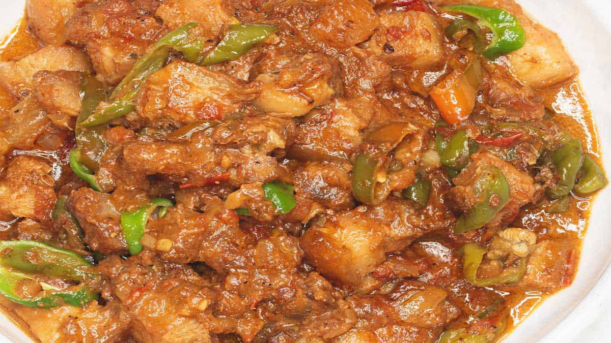

Collection of Pork Recipes
Pork Adobo
The adobo was traditionally cooked in clay pots but today is made in more common metal pots or woks. When the Spanish invaded and settled in the Philippines during the 16th century, they witnessed this traditional Filipino cooking method and called it adobo, which is the Spanish word for marinade.
Pork Binagoongan
Binagoongan is a traditional dish and a technique of preparing food originating from the Philippines. It consists of protein (usually pork belly) that's cooked with shrimp paste.
Pork Menudo
Menudo is a dish of latin origins. Its Filipino roots probably stem from the Spanish who colonized the country in the 1500's. Menudo is extremely popular in Mexico where the dish is traditionally prepared with tripe and is believed to be a cure for hangovers.
Pork Sisig

Sisig is a Filipino dish made from pork jowl and ears (maskara), pork belly, and chicken liver, which is usually seasoned with calamansi, onions, and chili peppers. It originates from the Pampanga region in Luzon. Kapampangan sisig served on a hot plate.
Pork Sinigang